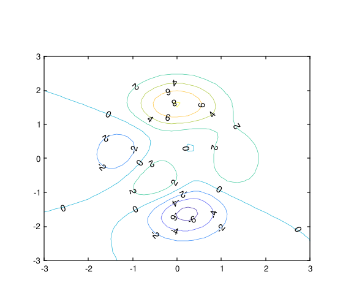
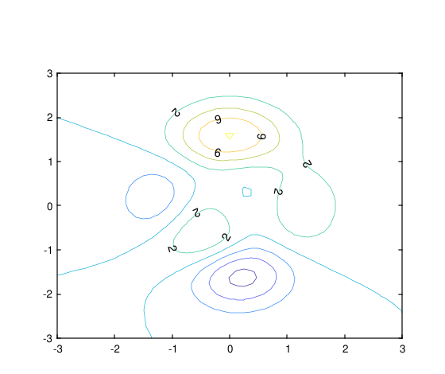
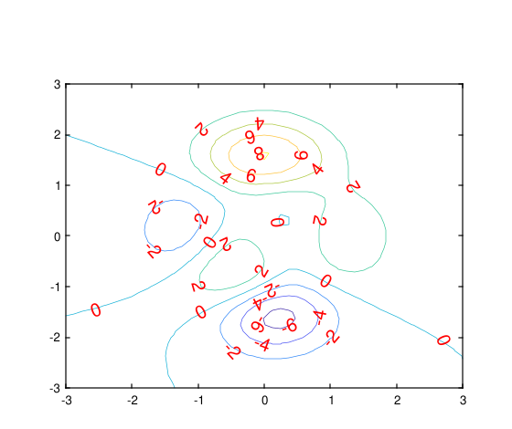
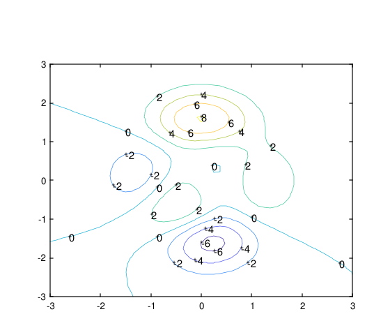

clabel(C,h)
clabel(C,h,v)
clabel(C)
clabel(C,v)
tl = clabel(...)
clabel(...,Name,Value)
| Paramètre | Description |
|---|---|
| C |
Matrice Contour retournée par contour, contourf, oucontour3. Si vous passez un objet contourh, vous pouvez passer [] pour C. |
| h |
Handle d'objet contour retourné par contour / contourf / contour3. Lorsqu'il est fourni, l'étiquetage utilise les informations attachées à l'objet contour (niveaux et matrice de contour). |
| v |
Vecteur des niveaux de contour à étiqueter. Lorsqu'il est fourni, seuls ces niveaux reçoivent des étiquettes. |
| Paramètre | Description |
|---|---|
| t |
Objets Text créés par clabel. Les propriétés String contiennent les valeurs de contour affichées. |
| tl |
Objets Text et ligne créés lorsque des marqueurs droits sont utilisés (pour l'utilisation de style clabel(C)). |
La fonctionclabel insère des étiquettes dans les graphiques de contours :
figure();
[x,y,z] = peaks;
[C,h] = contour(x,y,z);
clabel(C,h)
figure();
[x,y,z] = peaks;
[C,h] = contour(x,y,z);
v = [2,6];
clabel(C,h,v)
figure();
[x,y,z] = peaks;
[C,h] = contour(x,y,z);
clabel(C,h,'FontSize',15,'Color','red')
figure();
[x,y,z] = peaks;
C = contour(x,y,z);
clabel(C)
| Version | Description |
|---|---|
| 1.15.0 | version initiale |